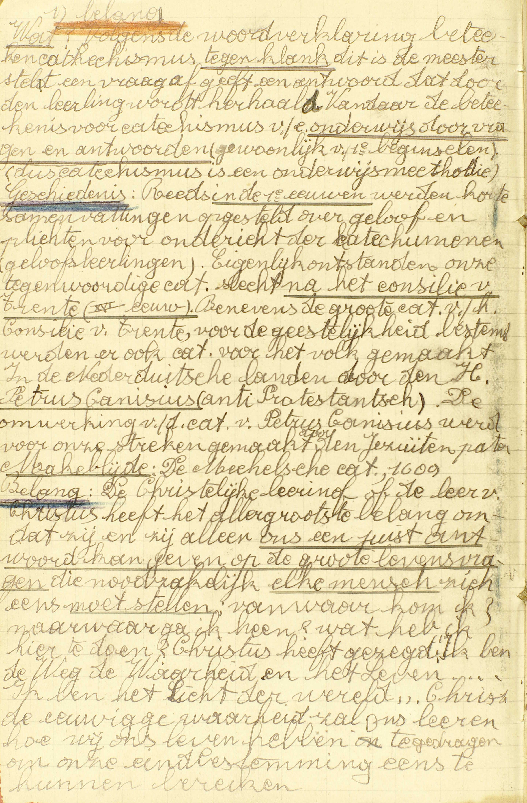
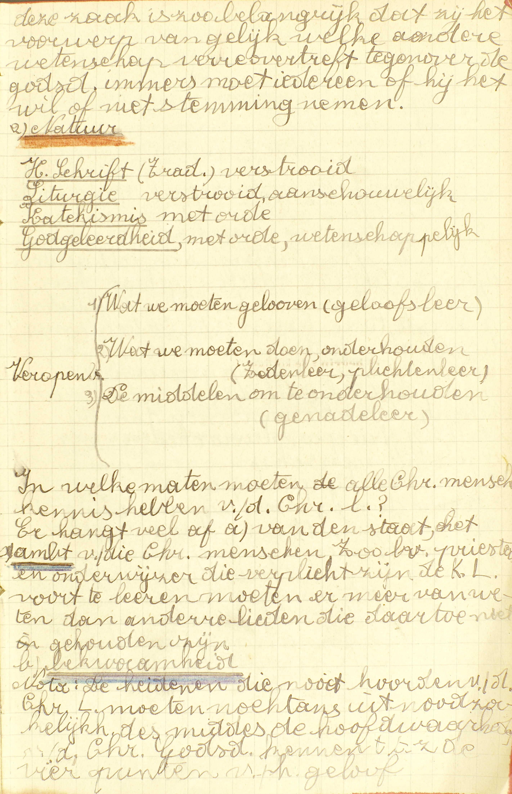
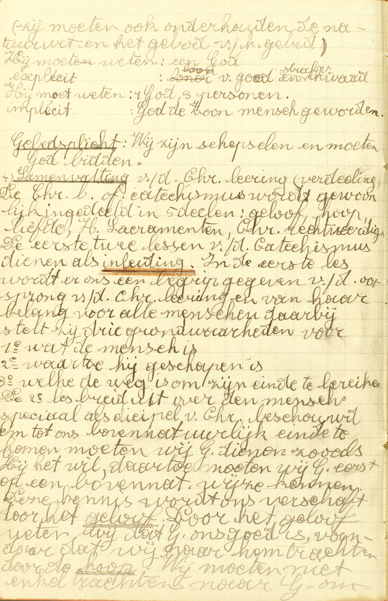
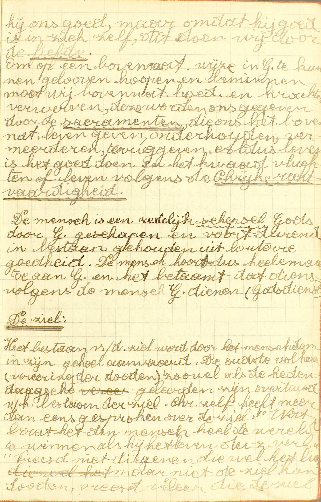
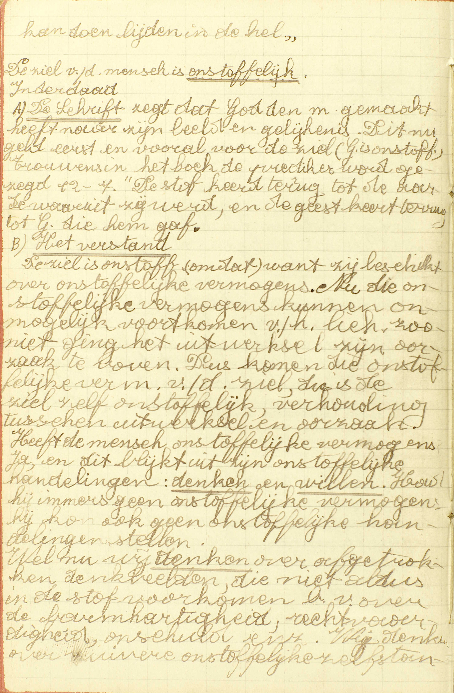
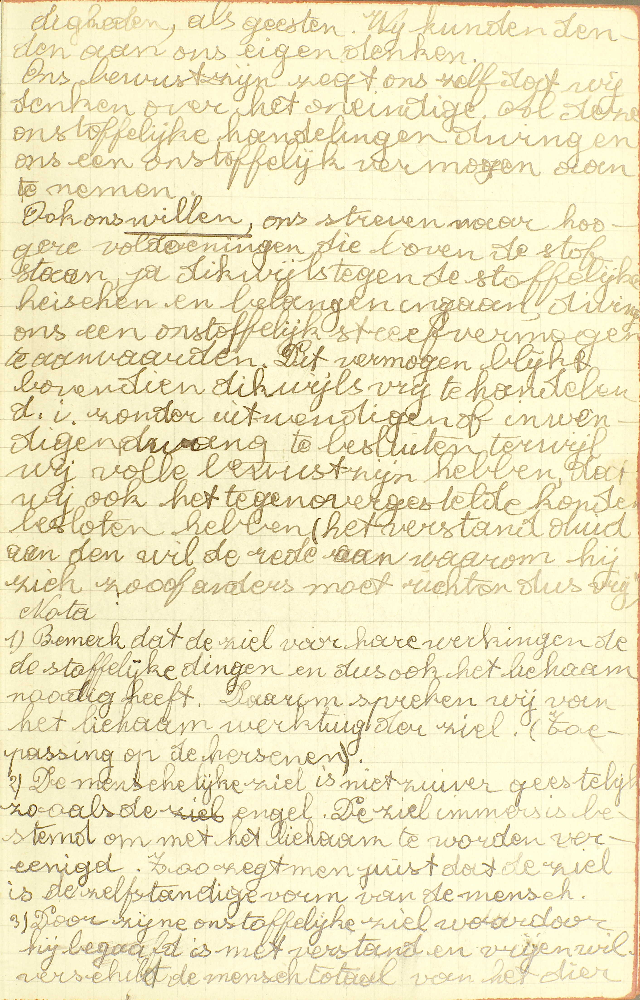
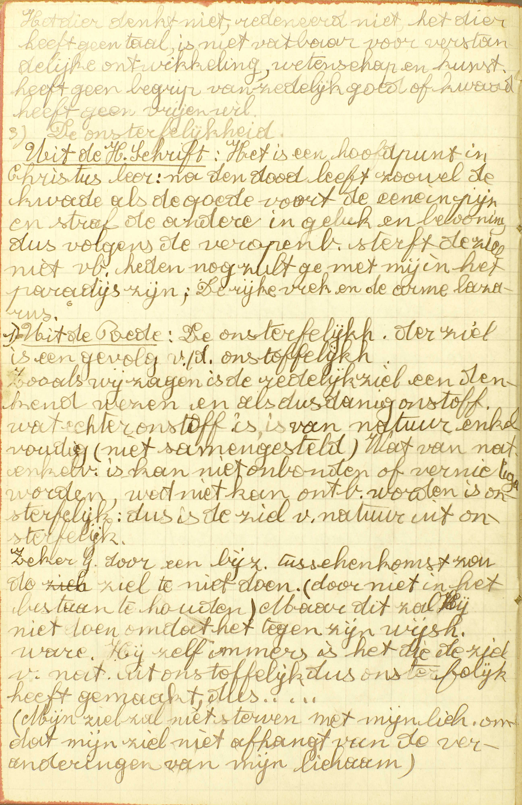
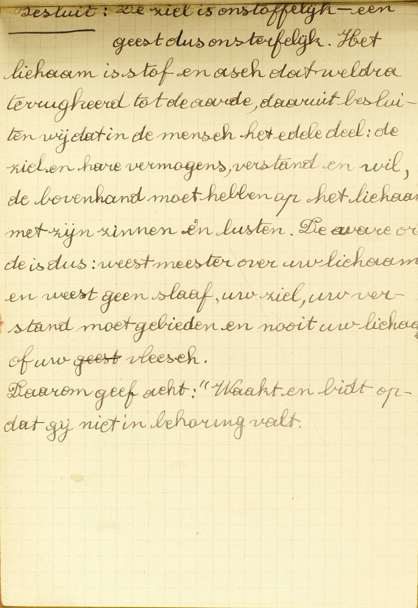
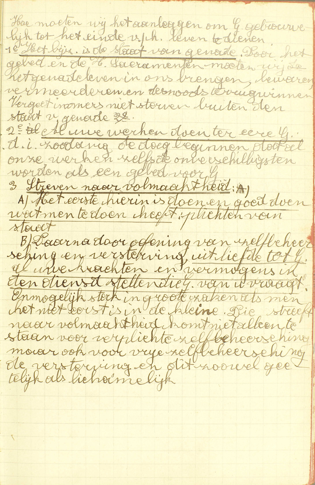

BEKNOPTE VERKLARING
van de
MECHELSE CATECHISMUS
ten gebruike van het middelbaar onderwijs
EERSTE DEEL
–
EERSTE LES
Van de Christelijke Leer en de mens
| De Christelijke Leer | Haar belang | Welke is de allerzaligste leer onder alle wetendheden van de wereld? | |
| Haar natuur | Wat heet gij de Christelijke Leer? | ||
| Haar eerste verkondigers | Wie heeft de Christelijke Leer eerst in de wereld gebracht? | ||
| Haar verdeling | Hoeveel delen zijn er van de Christelijke Leer? | ||
| De mens | Zijn natuur | Wat is de mens? | |
| Zijn einde | Tot wat einde is de mens geschapen? | ||
| Zijn plichten t.o.v. dat einde | Wat is de mens van node om tot zijn einde de komen? |
Welke is de allerzaligste leer onder alle wetendheden van de wereld?
De Christelijke Leer of de Catechismus

Volgens de woordverklaring betekent catechismus
tegenklank, dit is: de meester stelt een vraag of
geeft een antwoord, dat door de leerling wordt herhaald.
Vandaar de betekenis voor catechismus van een onderwijs
door vragen en antwoorden (gewoonlijk van de eerste
beginselen). Dus catechismus is een onderwijsmethode.
Geschiedenis: Reeds in de 1ᵉ eeuwen werden
korte samenvattingen opgesteld over geloof en plichten voor
onderricht van de catechumenen (geloofsleerlingen).
Eigenlijk ontstonden onze tegenwoordige catechismussen
na het concilie van Trente (XVIᵉ eeuw). Benevens de
grote catechismus van het concilie van Trente, voor de
geestelijkheid bestemd, werden er ook catechismussen voor
het volk gemaakt. In de Nederduitse landen door de H. Petrus
Canisius (anti-protestants). De omwerking van de catechismus
van Petrus Canisius werd voor onze streken gemaakt door de
Jezuïetenpater Makeblijde. De Mechelse Catechismus,
1609. Belang: De Christelijke leer of de leer van
Christus heeft het allergrootste belang omdat zij en zij
alleen ons een juist antwoord kan geven op de grote
levensvragen die noodzakelijk elke mens zich
eens moet stellen: vanwaar kom ik? naar waar ga ik
heen? wat heb ik hier te doen? Christus heeft gezegd: “Ik
ben de Weg, de Waarheid en het Leven… Ik ben het Licht van
de wereld.” Christus’ eeuwige waarheid zal ons leren hoe wij
os leven hebben te gedragen om onze eindbestemming eens te
kunnen bereiken. 
Deze zaak is zo belangrijk dat zij het voorwerp van
gelijk welke andere wetenschap ver overtreft, tegenover de
godsdienst immers moet iedereen of hij het wil of niet
stemming nemen.
In welke mate moeten alle christen
mensen kennis hebben van de christelijke leer? Er hangt veel
af a) van de staat, het ambt van die christen mensen. Zo
b.v. priester en onderwijzer die verplicht zijn de
katholieke leer voort te leren, moeten er meer van weten dan
andere lieden die daartoe niet gehouden zijn. b)
bekwaamheid.
Nota: de heidenen die nooit hoorden van de
christelijke leer, moeten nochtans uit noodzaakelijkheid de
hoofdwaarheden van de christelijke godsdienst kennen, t.t.z.
de vier punten van het geloof. (zij moeten ook onderhouden
de natuurwet en het gebod van het gebed.
 Gebedsplicht:
Wij zijn schepselen en moeten God bidden.
Samenvatting van de christelijke leer (verdeling).
De christelijke leer of catechismus wordt gewoonlijk
ingedeeld in vijf delen: geloof, hoop, liefde, heilige
Sacramenten, christelijke rechtvaardigheid. De eerste twee
lessen van de catechismus dienen als inleiding. In
de eerste les wordt er ons een begrip gegeven van de
oorsprong van de christelijke leer en van haar belang voor
alle mensen. Daarbij stelt zij drie grondwaarheden voor: 1ᵉ
wat de mens is, 2ᵉ waartoe hij geschapen is, 3ᵉ welke de weg
is om zijn einde te bereiken. De tweede les breidt uit over
de mens, speciaal als discipel van Christus beschouwd. Om
tot ons bovennatuurlijk einde te komen, moeten wij God
dienen zoals Hij het wil, daartoe moeten wij God eerst op
een bovennatuurlijke wijze kennen. Deze kennis wordt ons
verschaft door het geloof. Door het geloof weten
wij dat God ons goed is, vandaar dat wij naar Hem trachten
door de hoop. Wij moeten niet enkel trachten naar
God omdat hij ons goed is, maar omdat hij goed is in
zichzelf, dit doen wij door de Liefde.
 Om op een
bovennatuurlijke wijze in God te kunnen geloven, hopen en
beminnen, moeten wij bovennatuurlijke hoedanigheden en
krachten verwerven, deze worden ons gegeven door de
sacramenten, die ons het bovennatuurlijk leven
geven, onderhouden, vermeerderen, teruggeven. Aldus leven is
het goed doen en het kwaad vluchten of leven volgens de
christelijke rechtvaardigheid.
De mens is een
redelijk schepsel Gods door God geschapen en voortdurend in
bestaan gehouden uit loutere goedheid. De mens hoort dus
helemaal toe aan God en het betaamt dat dienvolgens de
mensen God dienen (Godsdienst).
De ziel: Het
bestaan van de ziel wordt door het mensdom in zijn geheel
aanvaard. De oudste volken (verering van de doden), zowel
als de hedendaagse geleerden zijn overtuigd van het bestaan
van de ziel. Christus zelf heeft meer dan eens gesproken
over de ziel: “Wat baat het de mens heel de wereld te winnen
als hij het leven van de ziel verliest.” “Vreest niet
diegene die wel het lichaam, maar niet de ziel doden, vreest
veeleer die de ziel kan doen lijden in de hel.”
 De ziel van de mens is
onstoffelijk. Inderdaad, A) de Schrift
zegt dat God de mens gemaakt heeft naar zijn beeld en
gelijkenis. Dit nu geldt eerst en vooral voor de ziel (God
is onstoffelijk). Trouwens in het boek Prediker wordt gezegd
(12:7) “De stof keert terug tot de aarde waaruit zij werd,
en de geest keert terug tot God die hem gaf.”
B) Het
verstand: De ziel is onstoffelijk want zij beschikt
over onstoffelijke vermogens. Nu die onstoffelijke vermogens
kunnen onmogelijk voortkomen van het lichaam. Zoniet ging
het uitwerksel zijn oorzaak te boven. Dus komen die
onstoffelijke vermogens van de ziel, dus is de ziel zelf
onstoffelijk, verhouding tussen uitwerksel en oorzaak. Heeft
de mens onstoffelijke vermogens? Ja, en dit blijkt uit zijn
onstoffelijke handelingen: denken en
willen. Had hij immers geen onstoffelijke
vermogens, hij kon ook geen onstoffelijke handelingen
stellen. Welnu, wij denken over afgetrokken
denkbeelden, die niet aldus in de stof voorkomen, b.v. over
de barmhartigheid, rechtvaardigheid, onschuld, enz. Wij
denken over zuivere onstoffelijke zelfstandigheden, als
geesten. Wij kunnen denken aan ons eigen denken.
 Ons bewustzijn zegt ons
zelf dat wij denken over het oneindige. Al deze
onstoffelijke handelingen dwingen ons een onstoffelijk
vermogen aan te nemen.
Ook ons willen, ons
streven naar hogere voldoeningen, die boven de stof staan,
ja dikwijls tegen de stoffelijk eisen en belangen ingaan,
dwingt ons een onstoffelijk vermogen te aanvaarden. Dit
vermogen blijkt bovendien dikwijls vrij te handelen, d.i.
zonder uitwendige of inwendige dwang te besluiten, terwijl
wij volle bewustzijn hebben, dat wij ook het
tegenovergestelde konden besloten hebben (het verstand duidt
aan de wil de rede aan waarom hij zich zo of anders moet
richten, dus vrij).
Nota: 1) Bemerk dat de ziel voor
haar werkingen de stoffelijke dingen en dus ook het lichaam
nodig heeft. Daarom spreken wij van het lichaam, werktuig
van de ziel (toepassing op de hersenen).
2) De
menselijke ziel is niet zuiver geestelijk zoals de engel. De
ziel immers is bestemd om met het lichaam te worden
verenigd. Zo zegt men juist dat de ziel is de zelfstandige
vorm van de mens.
3) Door zijn onstoffelijke ziel,
waardoor hij begaafd is met verstand en vrije wil, verschilt
de mens totaal van het dier.
 Het dier denkt niet,
redeneert niet, het dier heeft geen taal, is niet vatbaar
voor verstandelijke ontwikkeling, wetenschap, kunst, heeft
geen begrip van zedelijk goed of kwaad, heeft geen vrije
wil.
De onsterfelijkheid
Uit de Heilige
Schrift: Het is een hoofdpunt in Christus’ leer: na de
dood leeft zowel de kwade als de goede voort, de ene in pijn
en straf, de andere in geluk en beloning, dus volgens de
veropenbaring sterft de ziel niet, v.b. heden nog zult ge
met mij in het paradijs zijn; de rijke wrek en de arme
Lazarus.
Uit de rede: De onsterfelijkheid van
de ziel is een gevolg van de onstoffelijkheid. Zoals wij
zagen is de redelijke ziel een denkend wezen en alsdusdanig
onstoffelijk. Wat echter onstoffelijk is, is van natuur
enkelvoudig (niet samengesteld). Wat van natuur enkelvoudig
is, kan niet ontbonden of vernietigd worden, wat niet kan
ontbonden worden, is onsterfelijk: dus is de ziel van natuur
uit onsterfelijk.
Zeker God door een bijzondere
tussenkomst zou de ziel te niet doen (door niet in het
bestaan te houden). Maar dit zal Hij niet doen omdat het
tegen zijn wijsheid ware. Hij zelf immers het die de ziel
van natuur uit onstoffelijk, dus onsterfelijk heeft gemaakd,
dus…
(Mijn ziel zal niet sterven met mijn lichaam, omdat
mijn ziel niet afhangt van de veranderingen van mijn
lichaam)  Benevens
dit wijsgerig gewijs voor de onsterfelijkheid van de ziel,
kunnen wij ook nog enige degelijkse volkswijsheden aanhalen.
1) De zucht naar voortleven, naar blijvend geluk, m.a.w. de
zucht naar onsterfelijkheid die aangetroffen werd zowel bij
de oudste volkeren als heden ten dage, die zucht kan niet
ijdel zijn, dit ware immers tegen de wijsheid en de liefde
van God (die zucht komt van God, dus was God tegen de
mens).
Benevens
dit wijsgerig gewijs voor de onsterfelijkheid van de ziel,
kunnen wij ook nog enige degelijkse volkswijsheden aanhalen.
1) De zucht naar voortleven, naar blijvend geluk, m.a.w. de
zucht naar onsterfelijkheid die aangetroffen werd zowel bij
de oudste volkeren als heden ten dage, die zucht kan niet
ijdel zijn, dit ware immers tegen de wijsheid en de liefde
van God (die zucht komt van God, dus was God tegen de
mens).
2) De rechtvaardigheid van God eist ook de
onsterfelijkheid van de ziel: we stellen immers vast dat
hier op aarde niet immer op voldoende wijze wordt beloond en
gestraft. We stellen zelfs vast, dat de boze in rijkdom
leeft en de deugdzame in armoede. Dit alles eist een ander
leven, waar de rechtvaardige God aan ieder geeft naar
werken.
Nota: zeker door bijzondere tussenkomst zou God
hun ziel vernietigen. 
Besluit: de ziel is onstoffelijk, een geest,
dus onsterfelijk. Het lichaam is stof en as, dat weldra
terugkeert tot de aarde, daaruit besluiten we dat in de mens
het edele deel: de ziel en haar vermogens, verstand en wil,
de bovenhand moet hebben op het lichaam met zijn zinnen en
lusten. De ware orde is dus: weest meester over uw lichaam
en weest geen slaaf, uw ziel, uw verstand moet gebieden en
nooit uw lichaam of uw vlees. Daarom geef acht: “Wacht en
bidt opdat gij niet in bekoring valt.”
 Hoe moeten wij het
aanleggen om God trouw tot het einde van het leven te
dienen? 1ᵉ Het bijzondere is de staat van genade.
Door het gebed en de heilige Sacramenten moeten wij het
genadeleven in ons brengen, bewaren, vermeerderen en
desnoods terugwinnen. Vergeet immers niet: sterven buiten de
staat van genade.
2ᵉ Al uw werken doen ter ere van
God, d.i. zodanig de dag beginnen dat al onze werken,
zelfs de onverschilligsten, worden als een gebed voor
God.
3ᵉ Streven naar volmaaktheid: A) Het
eerste hierin is doen en goed doen wat men te doen
heeft: plichten van staat. B) Daarna door oefening van
zelfbeheersing en versterving, uit liefde tot God al uw
krachten en vermogens in de dienst stellen die God van u
vraagt. Onmogelijk sterk in grote zaken als men het
niet eerst is in de kleine. Die streeft naar volmaaktheid,
komt niet alleen te staan voor verplichte zelfbeheersing,
maar ook voor vrije zelfbeheersing, de versterving en dit
zowel geestelijk als lichamelijk. V.
Allerzaligste, dat is, meest dienstig tot
het bekomen van het eeuwig geluk; want in godsdienstige
zaken verstaan wij door Zaligheid het eeuwig geluk. –
Wetendheden, d.i. kennissen.
A. De allerzaligste onder alle wetendheden van de wereld is de Christelijke Leer: de leer voortkomende van Christus, de tweede persoon van de H. Drievuldigheid, voor ons mens geworden, — of de Catechismus: dit woord betekent uit zichzelf niets anders dan leer, maar is algemeen aangenomen om de uitmuntendste aller leren, namelijk, de Christelijke Leer aan te duiden.
Aangezien de Christelijke Leer onder al de wetendheden van de wereld de belangrijkste en de voordeligste is om ons tot de zaligheid te brengen, zo moeten wij ook meer ijveren zorg hebben om de Catechismus, dan om alle andere wetenschappen aan te leren.
Wat heet gij de Christelijke Leer?
Het kort begrip van hetgene dat Christus geleerd heeft, en alle Christenen moeten weten of doen om zalig te worden
A. Het kort begrip: de bondige inhoud, de bondige verzameling van hetgene dat Christus geleerd heeft: van geheel de Openbaring (zie 3ᵉ les, 1ᵉ v.), die de tweede persoon van de H. Drievuldigheid, voor ons mens geworden, in Gods naam aan het mensdom is komen doen. Die Openbaring leert ons hetgene alle Christenen moeten weten of doen om zalig te worden.
Men merke hier op: 1° dat niet enkel de Christenen verplicht zijn de Christelijke Leer te kennen: alle mensen moeten, na de prediking van Christus’ Openbaring gehoord te hebben, Christenen worden, en zó zijn allen gehouden de Christelijke Leer te kennen; 2° dat de Catechismus zegt; weten of doen, en niet, weten en doen, omdat er enige punten zijn die wij enkel moeten weten, b.v.‚ dat er maar één God is en drie goddelijke personen, en andere, zoals eert vader en moeder die wij moeten weten en ook doen.
Wie heeft de Christelijke Leer eerst in de wereld gebracht?
A. Christus zelf heeft deze eerst geleerd, en de Apostelen hebben ze alom verkondigd
A. Christus zelf heeft deze eerst geleerd: eerst zijn leer gepredikt, en dan in Palestina, het land van de Joden, omdat het joodse volk, van Abraham’s roep af‚ bestemd was, om zijn komst te bereiden. Hij heeft de goddelijkheid van zijn zending bewezen door menigvuldige voorzeggingen en mirakelen, in het bijzonder door de voorzegging en het mirakel van zijn verrijzenis. De mirakelen en de voorzeggingen, aangezien zij slechts door Gods bijzondere hulp kunnen gedaan worden, zijn noodzakelijk onwederlegbare bewijzen, dat de veropenbaring, voor dewelke zij gedaan worden, wezenlijk van God komt. En de Apostelen hebben ze alom verkondigd: Apostel wil eigenlijk zeggen zendeling, en onder de naam van Apostel verstaat men hier de twaalf geloofszendelingen door Christus gekozen, ook de H. Mathias: in de plaats van Judas aangesteld, en de H. Paulus later, op een buitengewone wijze tot het apostelschap geroepen. Deze hebben dus, na Christus, zijn leer gepredikt, en dat niet uitsluitend in het land van de joden, maar alom, d.i., overal, geheel de wereld dóór.
Hoeveel delen zijn er van de Christelijke Leer?
Vijf principale, te weten: het eerste, sprekende van het Geloof; het tweede, van de Hoop; het derde, van de Liefde; het vierde, van de Zeven Sacramenten; het vijfde, van de Christelijke Rechtvaardigheid
A. Van de vijf principale of voorname delen van de Christelijke Leer spreekt dus:
Het eerste, van het Geloof: van onze plicht van Christus’ leer door het Geloof aan te nemen, en van de waarheden welke die leer bevat;
Het tweede, van de Hoop: van onze plicht van te verzoeken, en te verwachten de hulp en het loon, die Christus beloofd heeft aan degenen die, volgens zijn leer, God willen dienen;
Het derde, van de Liefde: van de manier waarop wij volgens Christus’ leer, God moeten beminnen, en van hetgeen wij moeten doen of laten om Hem te beminnen;
Het vierde, van de Zeven Sacramenten: van de zeven uitwendige middelen die door Christus ingesteld zijn, en ons de hoedanigheden en krachten verschaffen om, gelijk God het vraagt, niet enkel als redelijke schepselen, maar als aangenomen kinderen Gods, in Hem te kunnen geloven, op Hem te kunnen hopen, en Hem te kunnen beminnen;
Het vijfde, van de Christelijke Rechtvaardigheid: van de staat van degenen die geloven, hopen, beminnen en de HH. Sacramenten ontvangen, gelijk Christus’ leer dat voorschrijft: Christelijke Rechtvaardigheid betekent immers die staat, waarin de mens, volgens Christus’ leer, juist zó is gelijk God het wil.
Deze vijf delen zijn zeer natuurlijk met elkander verbonden: immers, om God te dienen, moet men vooreerst Hem kennen, en, om Hem te kennen, moet men, ingeval dat hij een Openbaring gedaan heeft, in Hem geloven; ten tweede, hulp en loon van Hem hopen, want, zonder die hoop, zou men Hem niet kunnen dienen; ten derde, Hem beminnen of metterdaad willen dienen: ten vierde, die hoedanigheden en krachten aanwinnen, die tot zijn dienst vereist zijn; ten vijfde, een goed gedacht hebben van geheel die staat, waarin men God trouw dient, te weten, van de Christelijke Rechtvaardigheid.
Wat is de mens?
Een redelijk schepsel Gods, hebbende een onsterfelijke ziel en een sterfelijk lichaam
A. De mens is een schepsel Gods: een wezen door God van niet gemaakt; een redelijk schepsel Gods: een schepsel Gods met rede en verstand begaafd, en hierdoor overtreft de mens al de andere soorten van aardse schepselen: de levenloze dingen, die uitsluitend zijn; de planten, die zijn en leven; en de dieren, die zijn, leven en gevoelen; hebbende een onsterfelijke ziel en een sterfelijk lichaam: de mens dus bestaat uit twee delen: 1° uit een onsterfelijke ziel en 2° uit een sterfelijk lichaam.
De ziel is een geest en is bijgevolg onzichtbaar: ’t is door haar dat wij verstaan en willen. Zij is onsterfelijk, d. ì. zij zal nooit sterven, noch als het lichaam de dood ondergaat, noch later.
Het lichaam is het stoffelijk en zichtbaar deel van de mens, dat met de vijf zintuigen begaafd is. Het is sterfelijk d.i. het zal door de dood ontbonden en van de ziel gescheiden worden.
Tot wat einde is de mens geschapen?
Om in dit leven God te dienen, en namaals eeuwig Hem te aanschouwen
V. De zin is: waartoe is de mens door God, die hem geschapen heeft, bestemd?
A. De Catechismus duidt hem een dubbel einde aan:
1° In dit leven is zijn einde God te dienen: de wil Gods te volbrengen met het goed te doen en het kwaad te vluchten.
2° namaals, d.i. na dit leven, is zijn einde God eeuwig te aanschouwen: de goddelijke natuur aanschijn aan aanschijn tot in eeuwigheid te zien, wat een zo verhevene zaak is, dat daarin het geluk van God zelf bestaat.
Wat is de mens van node om tot zijn einde de komen?
Dat hij God kenne, God beminne en trouw tot het einde van zijn levens diene
A. Dus om in dit leven God te dienen en Hem namaals eeuwig te mogen aanschouwen moet de mens:
1° God kennen: weten, met Christus’ leer door het Geloof aan te nemen, hetgeen God nopens Zich zelf en nopens de dienst die Hij van ons vraagt, geopenbaard heeft;
2° God beminnen: God goed willen en bijgevolg al zijn geboden zoeken te onderhouden;
3° Hem trouw tot het einde van zijn levens dienen: Gods geboden geheel het leven dóór tot het ogenblik van de dood metterdaad onderhouden
Aanmerking
Dat Christus ons waarlijk gesproken heeft in Gods naam rust op de volgende onwederlegbare redenen:
Niemand, kan loochenen dat een Zaligmaker, van God gezonden, meermaals voorzegd is geweest gedurende geheel het tijdstip, tussen de val van Adam en Christus’ komst verlopen; en Christus zelf heeft, tot bevestiging van zijn zending, veel voorzeggingen gedaan. De boeken liggen daar, en niemand kan ze meer loochenen dan de zon, of de maan, die wij vóór ogen zien. Welnu, al die voorzeggingen zijn vervuld in Christus en in zijn Kerk die sedert bijna 19 eeuwen bestaat. Kan er een klaarder bewijs van Christus’ goddelijke zending uitgedacht worden? (Zie H. Geschiedenis.)
Daarenboven heeft Christus in zijn leven tot bevestiging van zijn zending gedurig allerhande mirakelen gedaan: ziekten van alle slag genas Hij met een woord, Hij veranderde de natuur van de zaken, gebood aan de boze geesten, deed de doden opstaan, en verrees zelf uit het graf. Hij stelde een Kerk in, haar belovende dat zij tot het einde van de eeuwen zou bestaan, en haar heerschappij tot alle natiën en landen uitstrekken; en wij zien die Kerk sedert 19 eeuwen altijd staan, terwijl alles in de wereld gedurig valt; wij zien ze zich altijd uitstrekken, terwijl alles op aarde zich verdeelt; wij zien ze altijd heilig, terwijl in aardse zaken en instellingen alles bederft; wij zien ze altijd dezelfde terwijl op aarde alles verandert. Is er wel een groter en voor alle ogen klaarblijkender mirakel dan die Kerk?
Voorzeggingen en mirakelen kunnen door God alleen gedaan worden; en bijgevolg wanneer zij geschieden tot bevestiging van een leer of zending, zijn zij er een onwederleghaar bewijs van. Christus’ leer dus, door al die voorzeggingen en mirakelen, die zich van ’t begin van de wereld tot heden toe uitstrekken, bevestigd, is ten klaarste als Gods leer bewezen.
VRAGEN
Welke zijn de hoofdpunten van deze les? — Wat onderzoekt de Catechismus nopens ieder van die punten?
Wat betekent het woord allerzaligste? — Waarom? — Wat betekenen de woorden Christelijke Leer en Catechismus? — Wat besluit moeten wij trekken uit de kennis van de belangrijkheid van de Christelijke Leer?
Is de Catechismus een breedvoerige leer? — Waarvan is hij een kort begrip? — Wat leert ons in ’t algemeen de Openbaring door Christus gedaan? — Moeten de Christenen alleen die Openbaring kennen? — Waarom zegt de Catechismus: weten of doen, en niet: weten en doen?
Waar heeft Christus zijn leer gepredikt; hoe heeft Hij die bevestigd? — Waarom heeft Hij tot zijn prediking het land van de Joden verkozen? — Door wie en waar is de Christelijke Leer na Christus gepredikt geweest? — Wie zijn de Apostelen?
Waarvan spreekt het 1ᵉ, het 2ᵉ, het 3ᵉ, het 4ᵉ en het 5ᵉ deel van de Catechismus? — Geef over ’t onderwerp van elk deel een korte verklaring. — Hoe zijn die vijf delen met elkander verbonden?
Welken oorsprong heeft de mens? — Welk schepsel Gods is hij? — Welke andere soorten van schepselen overtreft de mens door zijn rede? — Uit welke delen bestaat de mens? — Wat is de ziel en wat doen wij door haar? — Wat betekent hier het woord onsterfelijk? — Welke zijn de hoedanigheden van het menselijk lichaam? — Wat drukt de Catechismus uit als hij zegt dat het lichaam sterfelijk is?
Welk is de zin van de vraag: tot wat einde is de mens geschapen? — Welk is het einde van de mens in dit leven? — Welk is zijn einde na dit leven? — Wat is God aanschouwen, en hoe groot is dit geluk?
Hoeveel dingen zijn er vereist opdat de mens God hier in dit leven diene, en naraals eeuwig moge aanschouwen? — Wat betekenen de woorden: dat hij God kenne? — Wat is God beminnen? — Wat is God trouw tot het einde van zijn levens dienen?